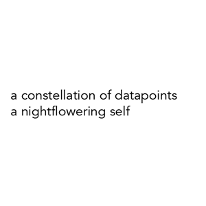
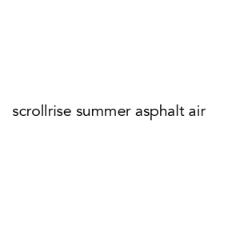
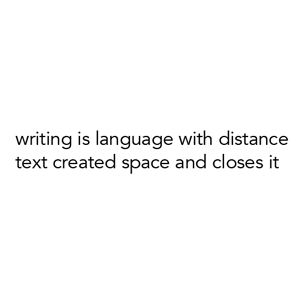
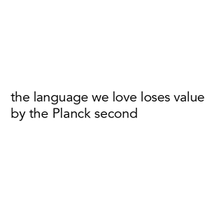
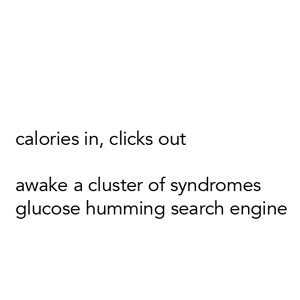
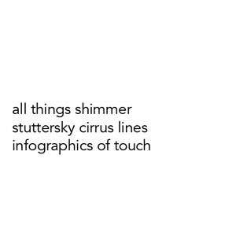
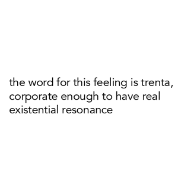
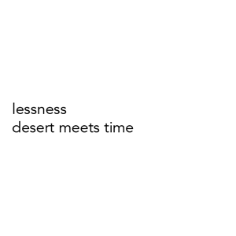
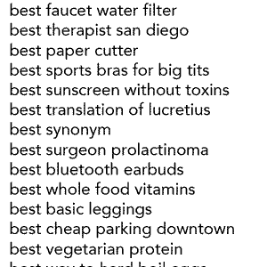
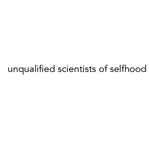
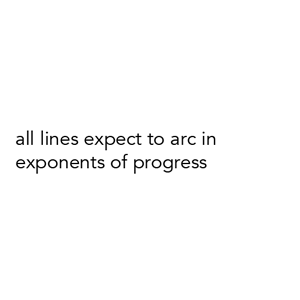
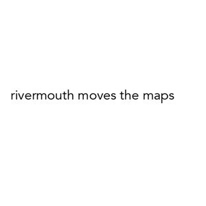
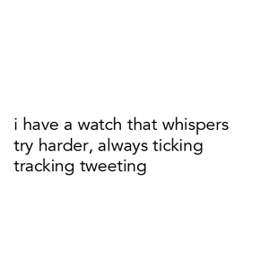
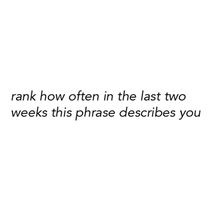
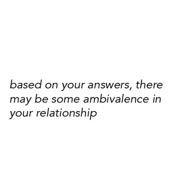
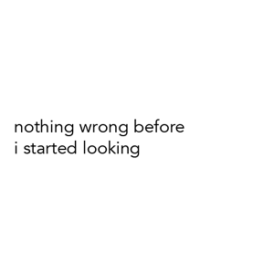
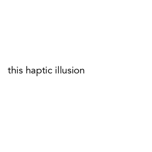
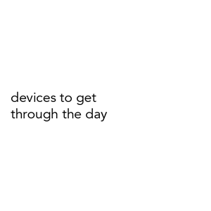
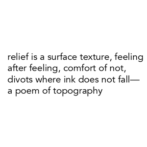
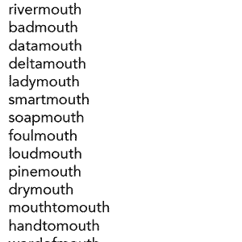
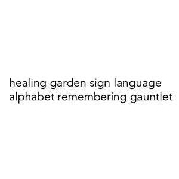
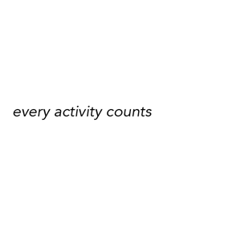
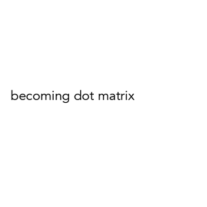
U R G E N T E N D L E S S
How does our data interpellate us? How much language does a body absorb inadvertently within a saturated information landscape? Here the parallel imperatives "urgent" and "endless" merge into a map of digital intensities harbored within bodies. These intensities are newly traceable with the growing ubiquity of wearable technologies, which shift perceived space-time toward "self as database" (as theorized by Natasha Schull). URGENTENDLESS charts an infinite digital ocean that drowns us, drawing on the sixth sense of search histories and the effluvia of the newsfeed to highlight their haunting poetics--marking the vectors that implicate physical bodies and institutional intimacies. This new natural history pins nothing down; rather, the GIFs enacts this altered aesthetic experience: now always partial and overwhelming, a multitasking either/and, a fluttering imaginary we inhabit--which also inhabits us.
View the handmade "paper GIF" chapbook version here.